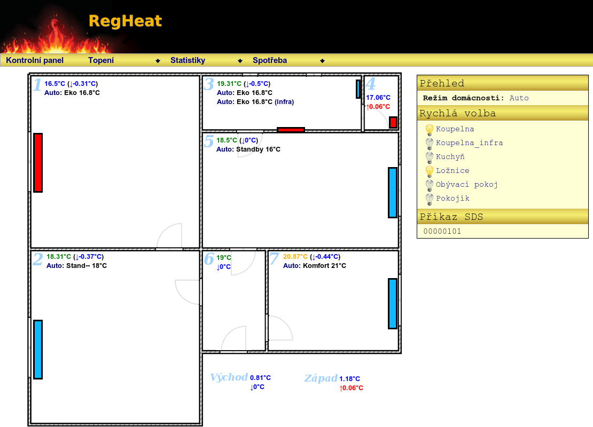
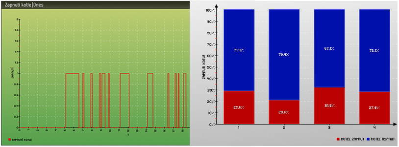
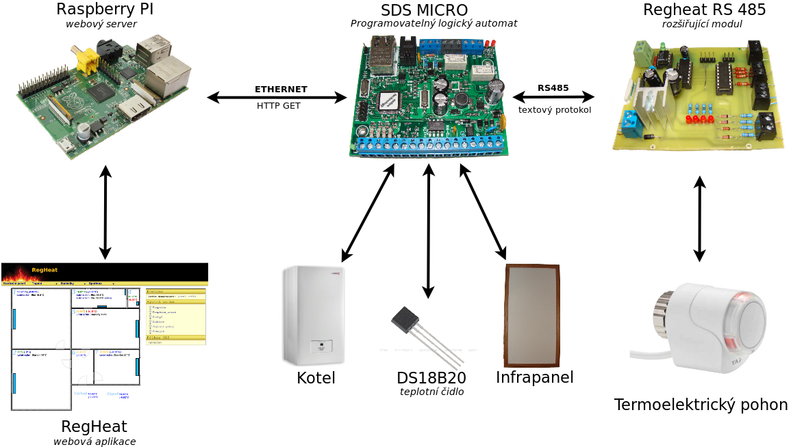
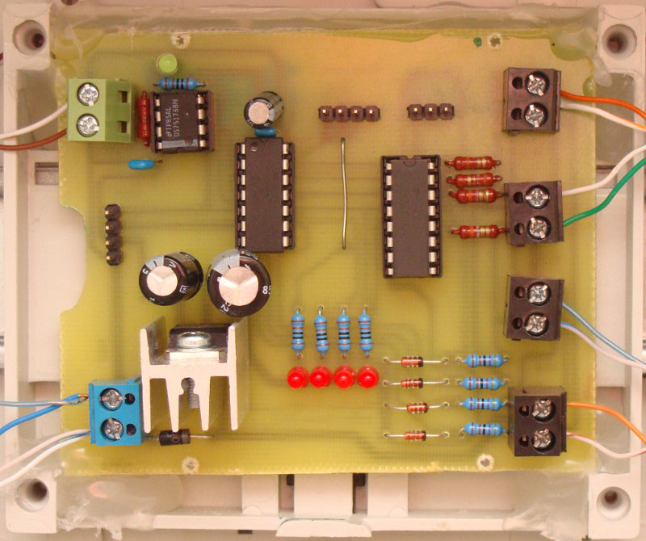

Vítejte na stránkách projektu RegHeat.
Projekt se snaží nabídnout svobodnou alternativu domácí automatizace se zaměřením na zónovou regulaci vytápění.
Náhled projektu

Možnosti projektu
- Týdenní program teplot
- Libovolný počet změn
- Přehledový panel, grafy teplot, trendy
- Statistiky
- RegHeat dokáže spolupracovat se zařízením SDS MICRO/MACRO českého výrobce http://www.onlinetechnology.cz/
- Prostřednictvím SDS je ovládán vytvořený rozšiřující modul RegHeat RS485, který ovládá termoelektrické pohony radiátorů
Princip komunikace
Znázornění komunikace mezi webovým serverem, zařízením SDS MICRO a rozšiřujícím modulem RegHeat RS485 Rozšiřující modul RegHeat RS485
Prototyp rozšiřujícího modulu RegHeat RS485 k ovládání čtyř termoelektrických pohonů, pomocí sběrnice RS485 a vlastního komunikačního protokolu. Instalace
Nejprve je třeba projekt nakopírovat do adresáře webového serveru (je nutné mít funkční LAMP server).
$ mkdir /cesta/k_webovému_serveru/regheat
$ cd /cesta/k_webovému_serveru/regheat
$ git clone git://github.com/VaclavBobek/RegHeat.git
Vytvoření databáze regheat v MySQL, např. pomocí nástroje phpMyAdmin nebo ručně:
$ mysql -u root -p
CREATE DATABASE regheat
CHARACTER SET utf8
COLLATE utf8_czech_ci;
Nakopírování tabulek projektu do vytvořené databáze regheat:
mysql -u root -pHESLO regheat --default-character-set=utf8
< /cesta/k_webovému_serveru/regheat/db/regheat.sql
Konfigurace
Je zapotřebí provést změnu těchto konfiguračních souborů:
- /inc/constants.php
- /inc/connect.php
Vytvoření crontabu pro spouštění rutinních sktiptů:
[regheat@RegHeat ~]$ crontab -e
*/1 * * * * cd /srv/http/regheat/scripts && php load_temp.php
*/1 * * * * cd /srv/http/regheat/scripts && php control_temperature.php
*/8 * * * * cd /srv/http/regheat/scripts && php generate_db_stats.php
*/10 * * * * cd /srv/http/regheat/grafy && php index.php
*/15 * * * * cd /srv/http/regheat/grafy && php stats_graphs.php
Cesty k jednotlivým souborům je třeba upravit dle vlastních potřeb.
Přihlášení do aplikace
Spusťte svůj oblíbený webový prohlížeč, zadejejte stránku projektu a přihlašte se:
Přihlašovací jméno: regheat
Uživatelské heslo: regheat
Autor
Můj profil na GitHub (@VaclavBobek).
Licence
Projekt je pod licencí GNU/GPL. Stáhněte si jej, používejte, upravujte dle libosti.